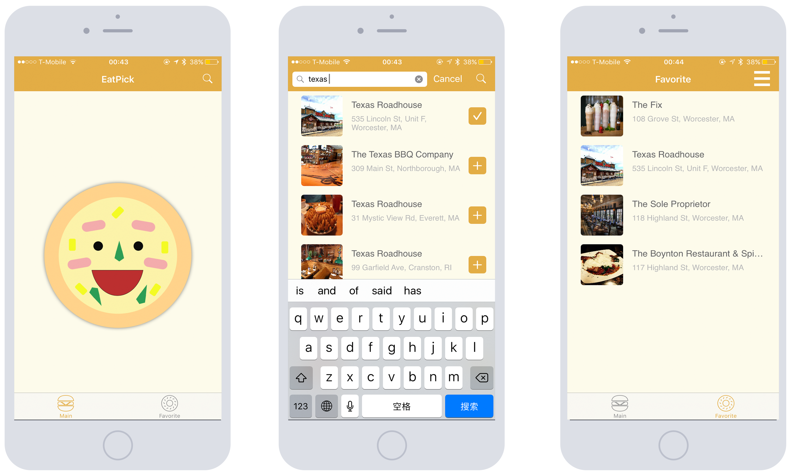
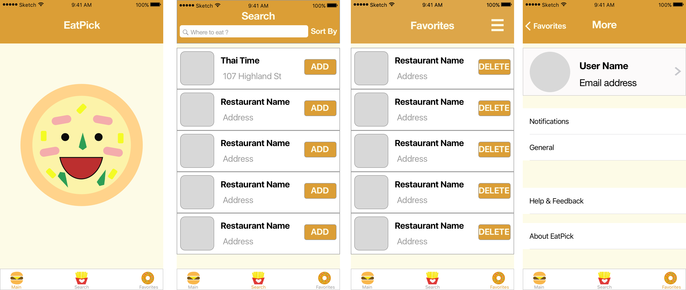
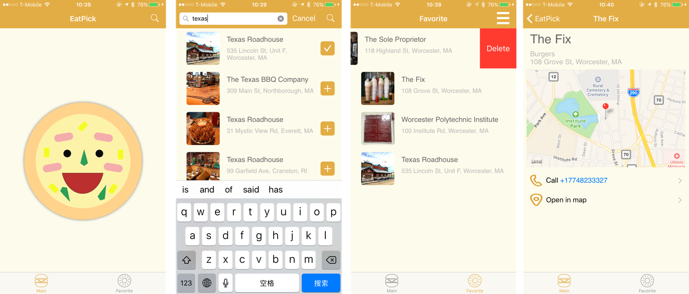

EatPick
iOS App Design
Nov 2016
Cannot decide where to eat? EatPick
can decide it for you! It can let you
look up nearby restaurants, add them
to your favorite list and pick one from
the list! It also support randomly picking
a nearby restaurant and let you decide
where to eat efficiently.

Inspiration
The most difficult thing to decide in my daily life is always where to eat. As a foodie, it’s difficult to look at food as fuel, rather than entertainment. The very common situation I have to face everyday is facing two or more delicious restaurants and struggling with picking one from them. Then I come up with an idea with Shihao Xia (charlesxsh.github.io): Making an app by ourself and let this app make decision for us! So we create this app together. I take charge of UI/UX design, and he is responsible for app developing. We spent two weeks on this project and it has been uploaded to Apple App store and already been updated to version 1.1.4.
Prototype
I built on the inspiration and sketched out more detailed wireframes of the app below.

We all satisfied with all the features covering in the quick sketch above so I created mockup in Sketch App.

I like these three food icons above, but according to iOS Human Interface Guidelines, it’s more
acceptable to use single color rather than complicated graphic icon with multiple colors. So I changed
them into linear icons.
I also changed “ADD” and “DELETE” button to “+” “√” and sliding to left to delete in order to reduce the
time spending on understanding what those words mean and obey most users’ operating habits.
Testing
We used the prototype based on mockup above and tested ten person, observing how they were using this app. And we
realized that, eight person didn’t know how to start this app, they clicked the pizza icon in the home
page but get no response. Four out of these eight person then clicked Search button and tried to search
some restaurants and added to Favorites. After that, everyone knew how to use this app. So we decided
to remove search tap from the bottom bar and added a search area at the top of homepage to make user
figure out how to use this app more efficiently.
Also we added a new feature that, although user’s favorite list may contain nothing, once the user clicks
on the pizza icon on the homepage, we will random a restaurant within 4 miles’ distance.
One more thing needed to be concern is, nine out of these ten person didn’t want to create account. So
we deleted this part in our final app project.
Final
After our self-changing and testing, the interface of EatPick finally looks like:

Up to version 1.1.4, Eatpick can support from iOS8 to the latest, and we are still finding places
to improve our app. Feedback is always welcome!!